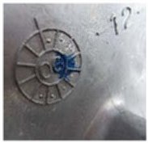

Engine - Lower End Oil Leaks: Overview
INFORMATIONBulletin No.: 03-06-01-027A
Date: May 01, 2008
Subject:
Oil Leak, Lower Crankcase Reseal - RTV Sealant Procedure with Current Engine Oil Manifold / Distribution Plate
Models:
2006-2008 Buick Lucerne
1993 Cadillac Allante
1993-2002 Cadillac Eldorado
1993-2004 Cadillac Seville
1994-2005 Cadillac DeVille
2004-2008 Cadillac SRX, XLR
2005-2008 Cadillac STS
2006-2008 Cadillac DTS
1996-2003 Oldsmobile Aurora
2004-2005 Pontiac Bonneville GXP
with 4.0L or 4.6L V-8 Engine (VINs C, Y, 9, A -- RPOs L47, LD8, L37, LH2)
Supercede:
This bulletin is being revised to add model years, models, Warranty Information, revise the Subject title line and give important information on parts with date codes. Please discard Corporate Bulletin Number 03-06-01-027 (Section 06 - Engine/Propulsion System).
This bulletin is being issued to inform dealers of enhancements to crankcase oil distribution plate (Engine Oil Manifold) and oil pan sealing by using RTV sealant in the procedure.
Warranty Information

It is vital that the exact part(s) replaced during any warranty repair be returned when requested. These parts must be the specific ones associated with the repair order requested and must carry the proper date codes for the production run of the vehicle or component. Substitute parts are not acceptable. This information is used during warranty part reviews and is tracked to determine possible problems with a specific production run. Shown above is an example of a typical date code found on an engine component.
The more precisely that GM can isolate a production time frame that is causing customer concerns the quicker and more effectively we can target a solution. For addition information on parts with date codes please refer to GM Corporate Service Bulletin # 06-00-89-054B.
For vehicles repaired under warranty, use the table.

Disclaimer